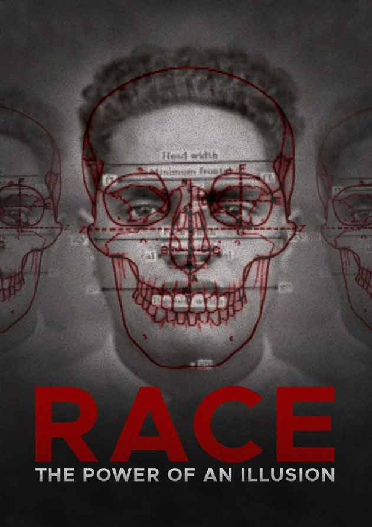

 An episodic or series motions
We have provided you excerpts to review on 3 episodes, check out the channel to watch!
Episode 1...CONFRONTING OUR MYTHS ABOUT RACE We have a long history of searching for innate differences to explain disparities in group outcomes - not just for inherited diseases, but also SAT scores and athletic performance. In contrast to today's myth of innate Black athletic superiority, a hundred years ago many whites felt that Black people were inherently sickly and destined to die out. That's because disease and mortality rates were high among African Americans - the cause was poverty, poor sanitation, and Jim Crow segregation, but it was easier for most people to believe it was a result of "natural" infirmity, a view popularized by influential statistician Frederick Hoffman in his 1896 study, Race Traits and Tendencies of the American Negro. Racial beliefs have always been tied to social ideas and policy. After all, if differences between groups are natural, then nothing can or should be done to correct for unequal outcomes. Scientific literature of the late 19th and early 20th century explicitly championed such a view, and many prominent scientists devoted countless hours to documenting racial differences and promoting man's natural hierarchy.
Episode Two: The Story We Tell It's true that race has always been with us, right? Wrong. Ancient peoples stigmatized "others" on the grounds of language, custom, class, and especially religion, but they did not sort people according to physical differences. It turns out that the concept of race is a recent invention, only a few hundred years old, and the history and evolution of the idea are deeply tied to the development of the U.S. "The Story We Tell" traces the origins of the racial idea to the European conquest of the New World and to the American slave system - the first ever where all the slaves shared similar physical traits and a common ancestry. Historian James Horton points out that the enslavement of Africans was opportunistic, not based on beliefs about inferiority: "[Our forebears] found what they considered an endless labor supply. People who could be readily identified and so when they ran away they couldn't melt into the population like Native Americans could. People who knew how to grow tobacco, people who knew how to grow rice. They found the ideal, from their standpoint, the ideal labor source." Ironically, it was not slavery but freedom - the revolutionary new idea of liberty and the natural rights of man - that led to an ideology of white supremacy. Historian Robin D.G. Kelley points out the conundrum that faced our founders: "The problem that they had to figure out is how can we promote liberty, freedom, democracy on the one hand, and a system of slavery and exploitation of people who are non-white on the other?" Horton illuminates the story that helped reconcile that contradiction: "And the way you do that is to say, 'Yeah, but you know there is something different about these people. This whole business of inalienable rights, that's fine, but it only applies to certain people.'" It was not a coincidence that the apostle of freedom himself, Thomas Jefferson, also a slaveholder, was the first American public figure to articulate a theory speculating upon the "natural" inferiority of Africans. Similar logic rationalized the taking of American Indian lands. When the "civilized" Cherokee were forcibly removed from their homes in Georgia to west of the Mississippi, one in four died along the way, in what became known as The Trail of Tears. President Andrew Jackson defended Indian removal: it was not the greed of white settlers that drove the policy, but the inevitable fate of an inferior people established "in the midst of a superior race."
Cast: